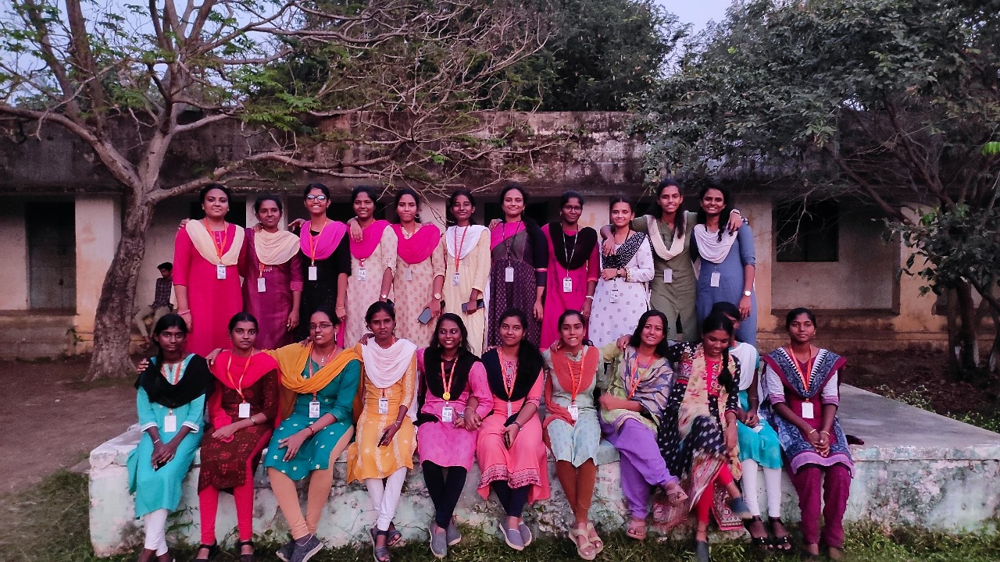
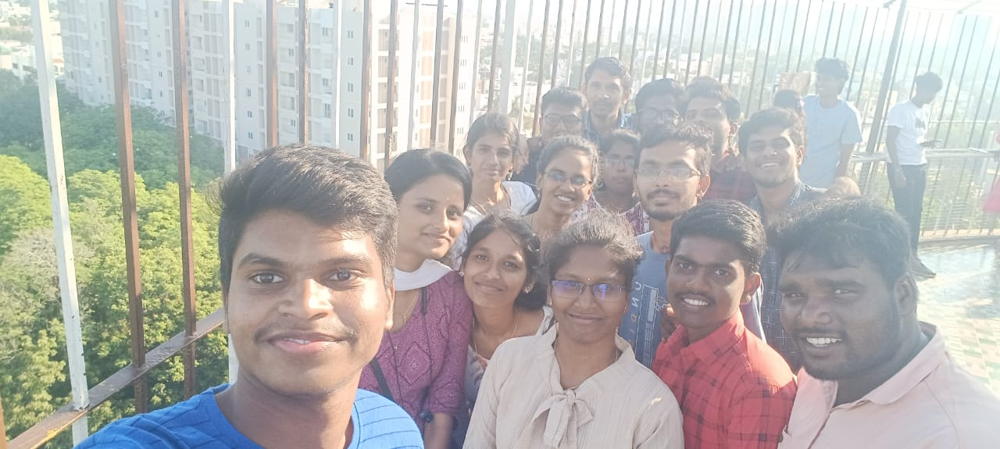
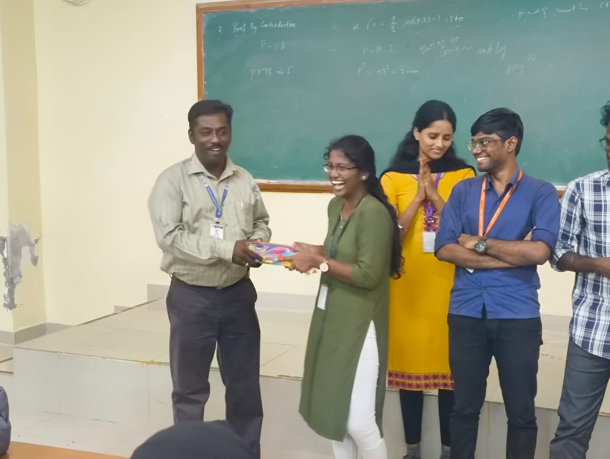
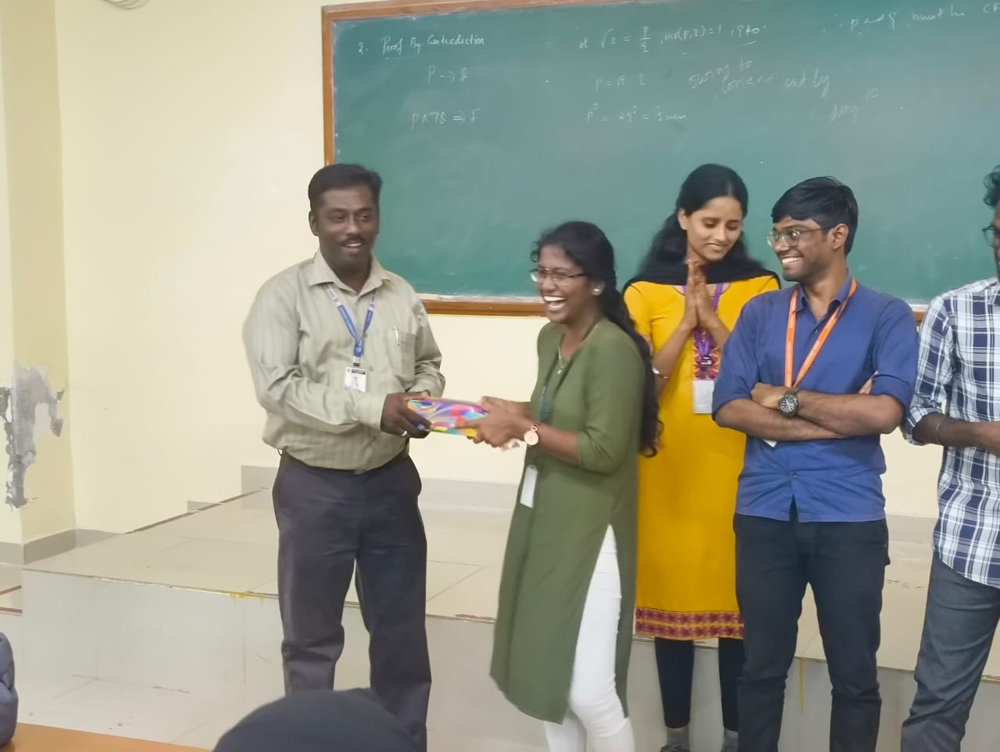
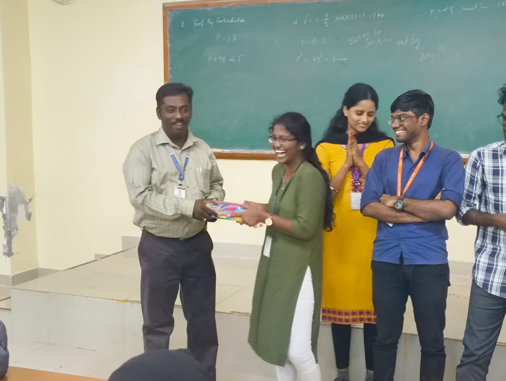

!!! Rani Jothiyammavae !!!
Unit hitler
She is very strict after finishing the camp also.The one and only girl who makes our nss unit 3 to get more proud.She always thinking what are all the possible ways in which we can make something different from all other units.hats of for your all Hard work to make us to feel comfortable.Thank you for everything akka
Strict Officer
Jothi Akka is the perfect mix of strict NSS commander and caring mom—she’ll scold you one second and make sure you’ve eaten the next! 😂🔥
Hi Jothi akka,First person I had talked in NSS✨. Romba nalla akka...thanks akka engala ivlo caring ah paathukittadhukku♥️....neenga romba kova pattu paathadhe illa😅🥰....infact neenga help panla na naa NSS la join pandrukkave maaten....so thanks a lots and lots akka🙏🏻✨♥️
Jothi ka ..... Iron lady of our unit..Always be bold and happy like this❤️🔥
Akka ...neenga irundha meet kalakalapa irrukum ka ....serious pora meetku vara guest maari neenga...ka
Who is strictly person
Responsible sister. Care taker
Akka you have been nothing but wonderful throughout this service. But there were time we used to scold you, for being too strict. But the kind heart of you was clearly visible during orphanage visit and camp. THANK YOU for all the support and hard work you've put in.
"Enna ragam sir avan" apdinu solra maadiri irukkum. Yenna! palladharava jollyaa irupaanga palla neram summave kurai solline irupaanga silla neram semma strictaa irupaanga pa. Oru sila neram "Enna Enna solran paarunga" apdiyum irukkum. But as always, avanga romba silent but sometimes violent and calm but silent boom. Such a straight forward character pa avanga. 😤😭😎
My immediate senior akka
PO's daughter ehhh siricha azhaga irukinga so siringa


 

